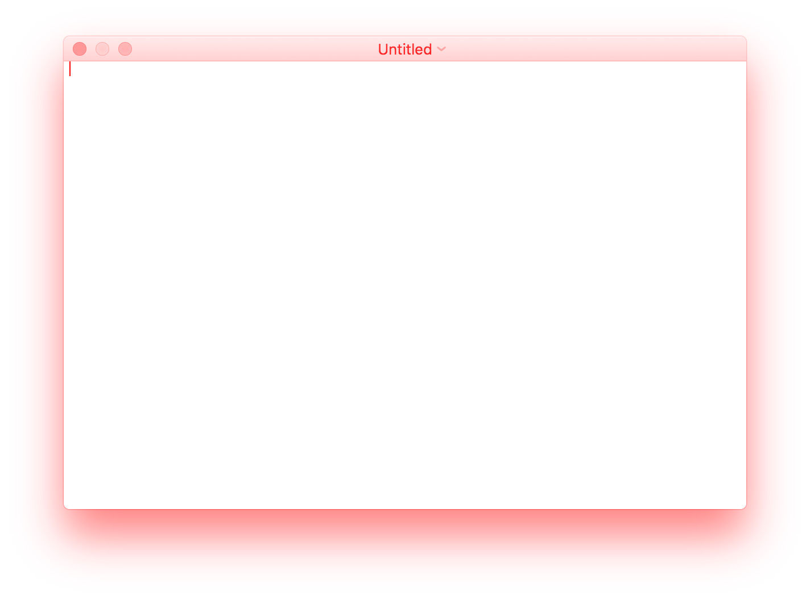
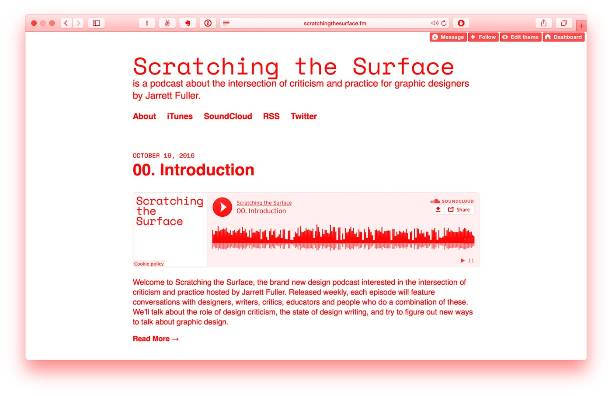

<div class="statcounter"><a href="http://www.statcounter.com/" target="_blank"><img class="statcounter" src="http://c4.statcounter.com/862958/0/4b79b18c/1/" alt="free counter statistics" ></a></div>
Jarrett Fuller
About
Projects
Library
Blog
Podcast
Jarrett Fuller
is a
designer and writer
in Brooklyn, NY. He hosts a
podcast
, teaches design at various schools, takes
photos
, and reads a lot of
books
.